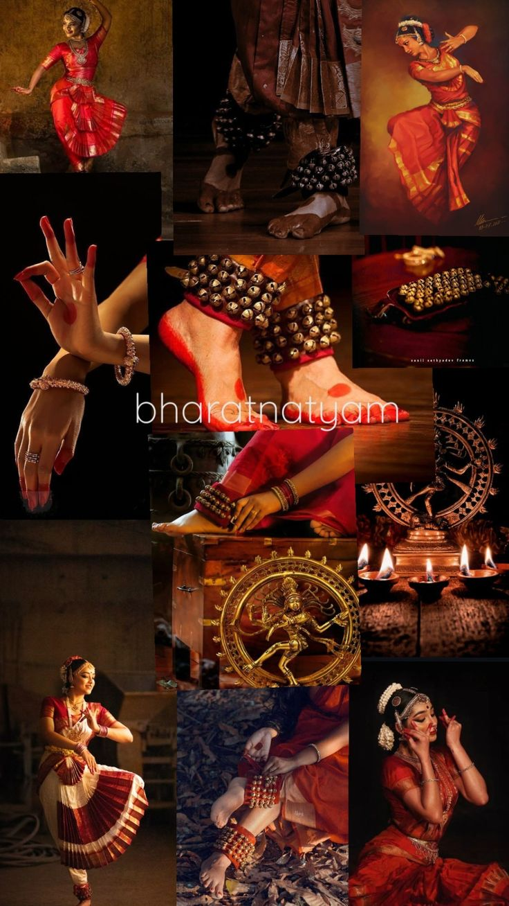
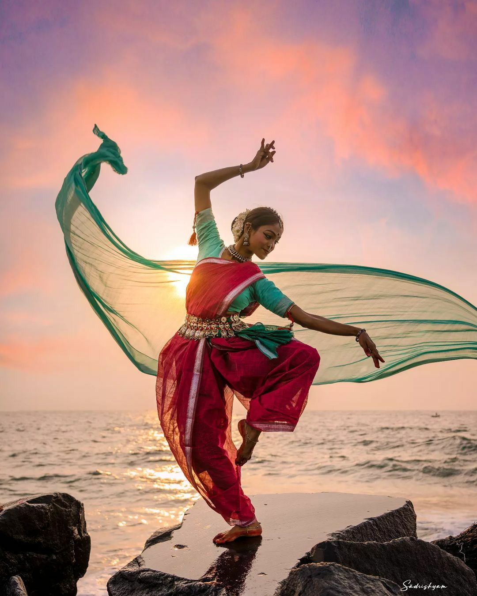
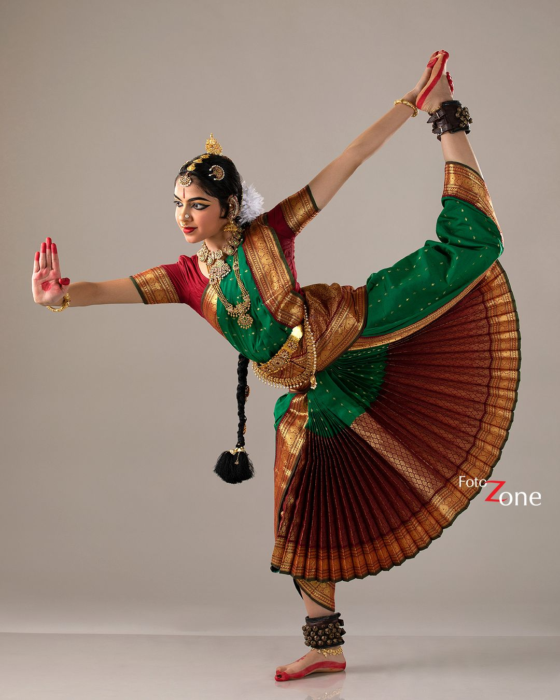
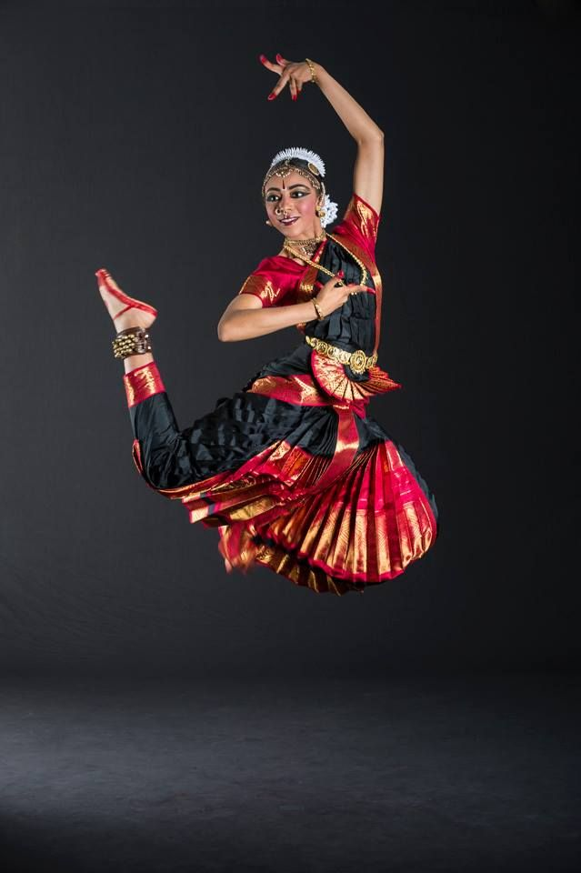

Bharatanatyam is one of the oldest classical dance forms of India. It originated in Tamil Nadu and expresses religious themes and spiritual ideas.
The dance combines music, rhythm, expressions, and storytelling. Performers use facial expressions, hand gestures (mudras), and body movements to convey emotions and stories.
It includes strong footwork, bent knee posture (Aramandi), and graceful movements. Today, it is performed worldwide and represents India’s rich culture.
The roots of Bharatanatyam come from the ancient text Natya Shastra. It was earlier performed by Devadasis in temples and later revived for stage performances.
Nritta: Pure dance movements without expression.
Nritya: Expression-based dance.
Natya: Storytelling dance.
Mudras: Hand gestures.



